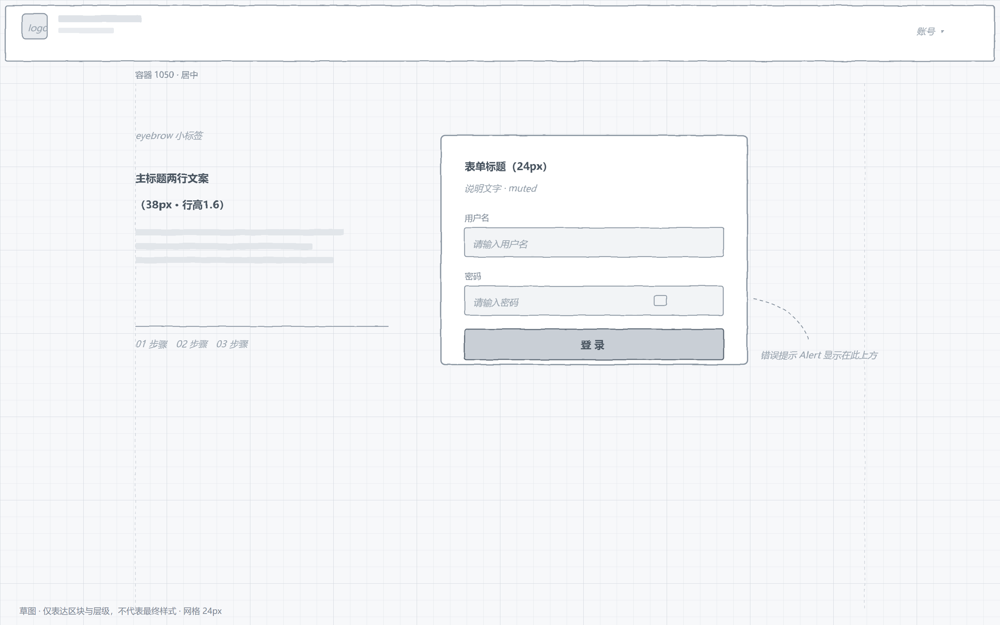
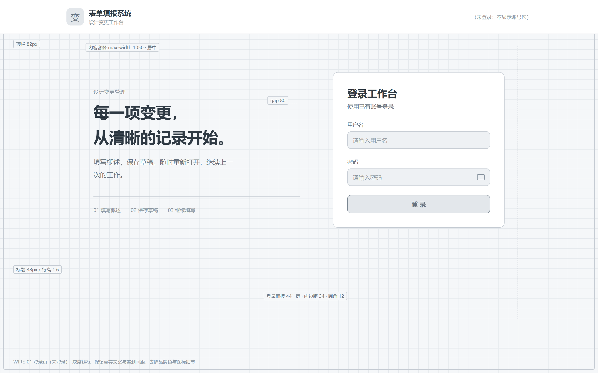
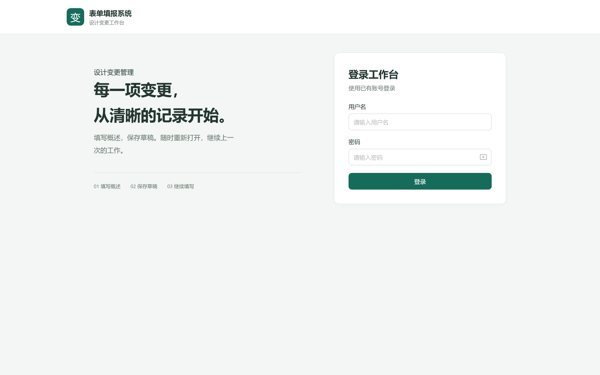
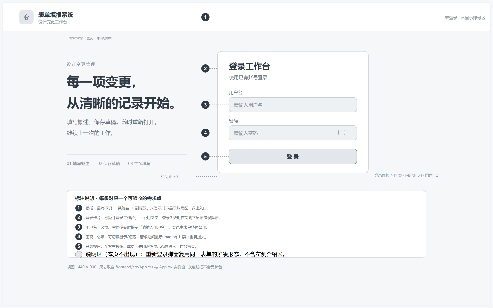

同一视口 1440×900、同一倍率 2x、同一渲染器 Chrome 155 无头模式。文案与尺寸取自 frontend/src/App.tsx 与 App.css 实测值（顶栏 82、容器 1050、双栏 1.2:1、间距 80、面板 441）。

A · 手绘风 SVG网格 + 灰块 + 手绘抖动描边，能表达"这是草稿"。但粗线条和斜体占位字缩小后糊成一团，也不便逐块标编号。适合讨论阶段，不适合当需求基线。

B · 干净灰度线框真实文案、真实间距，去掉品牌色。信息清楚、可加尺寸标注。缺点：源文件是 HTML，看图和入库都多一步渲染。

C · 真实页面带品牌绿、真实字体与组件，可信度最高。但它记录的是"当时长这样"而不是"应该长这样"；改一次配色就过期，也无法在图上表达校验、禁用、报错等状态。

D · 可追溯编号线框在 B 的基础上加编号 ①—⑤，每条对应一句可验收的界面行为（必填、提示文案、加载禁用、成功跳转）。纯 SVG，矢量、可 diff、不依赖构建，插入文档再配一张编号表即可。